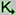
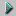
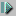
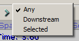

UDN
Search public documentation:
KismetVisualDebuggerJP
English Translation
中国翻译
한국어
Interested in the Unreal Engine?
Visit the Unreal Technology site.
Looking for jobs and company info?
Check out the Epic games site.
Questions about support via UDN?
Contact the UDN Staff
中国翻译
한국어
Interested in the Unreal Engine?
Visit the Unreal Technology site.
Looking for jobs and company info?
Check out the Epic games site.
Questions about support via UDN?
Contact the UDN Staff
UE3 ホーム > Kismet ビジュアル スクリプト処理 > Kismet ビジュアル デバッガーユーザーガイド
Kismet ビジュアル デバッガーユーザーガイド
概要
Kismet ビジュアル デバッガー ウインドウ

Kismet ボタンをクリックするだけで再び開くことができます。 図式パネルの左上隅には情報ボックスがあり、ゲームが一時停止すると、ゲームの現在の実行時間と Execution Paused! (実行中止!) という通知が表示されます。
アクティブなリンクは白で表示されます。アクティブなオブジェクトは白い枠が付き、その上方に情報ボックスが置かれて、これまでアクティベートされた回数、および、このオブジェクトが最後にアクティベートされた時間が表示されます。
オブジェクト左上隅のオレンジの矢印は、どのオブジェクト上で Kismet ウインドウが現在一時停止しているかを示しています。
図式パネルの左上隅には情報ボックスがあり、ゲームが一時停止すると、ゲームの現在の実行時間と Execution Paused! (実行中止!) という通知が表示されます。
アクティブなリンクは白で表示されます。アクティブなオブジェクトは白い枠が付き、その上方に情報ボックスが置かれて、これまでアクティベートされた回数、および、このオブジェクトが最後にアクティベートされた時間が表示されます。
オブジェクト左上隅のオレンジの矢印は、どのオブジェクト上で Kismet ウインドウが現在一時停止しているかを示しています。
ブレークポイント
 複数のシーケンスオブジェクトが選択された場合は、選択されたオブジェクトそれぞれにブレークポイントが追加されます (または、それぞれから削除されます)。
ブレークポイントがあるシーケンスオブジェクトには、オブジェクトの左上隅近くに赤い丸印がつきます。
複数のシーケンスオブジェクトが選択された場合は、選択されたオブジェクトそれぞれにブレークポイントが追加されます (または、それぞれから削除されます)。
ブレークポイントがあるシーケンスオブジェクトには、オブジェクトの左上隅近くに赤い丸印がつきます。
 ブレークポイントは、有効 / 無効を切り替えることもできます。そのためには、Alt キーを押下しながらシーケンスオブジェクトを左クリックします。
また、エディタ内で現在開いているすべてのレベルのブレークポイントをすべて解除するには ツールバーボタンを使用します。
Kismet ウインドウがデバッガーモードにあるか否かにかかわらず、ブレークポイントをシーケンスオブジェクトに追加したり、そこから削除したりすることが可能です。
リアルタイムデバッグが有効になっている場合、PIE がアクティブな状態で、ブレークポイントをともなったシーケンスオブジェクトがアクティベートされると、ゲームの実行が一時停止されて、デバッグモードの Kismet ウインドウが開き (まだ開いていなかった場合)、シーケンスオブジェクトが Kismet ウインドウの図式パネルの中央に来ます。
ブレークポイントは、有効 / 無効を切り替えることもできます。そのためには、Alt キーを押下しながらシーケンスオブジェクトを左クリックします。
また、エディタ内で現在開いているすべてのレベルのブレークポイントをすべて解除するには ツールバーボタンを使用します。
Kismet ウインドウがデバッガーモードにあるか否かにかかわらず、ブレークポイントをシーケンスオブジェクトに追加したり、そこから削除したりすることが可能です。
リアルタイムデバッグが有効になっている場合、PIE がアクティブな状態で、ブレークポイントをともなったシーケンスオブジェクトがアクティベートされると、ゲームの実行が一時停止されて、デバッグモードの Kismet ウインドウが開き (まだ開いていなかった場合)、シーケンスオブジェクトが Kismet ウインドウの図式パネルの中央に来ます。
ツールバーボタン
| アイコン | 説明 |
|---|---|
| Pause (一時停止) ゲームの実行を一時停止します。 (Alt+F7) | |
|  | Continue (再開) ゲームの実行を再開します。 (Alt+F8) |
 | Run to next action (次のアクションまで実行) 次のシーケンスオブジェクトまでゲームを実行します。詳細は下記を参照してください。(Alt+F10) |
|  | Step through (ステップ実行) 1 ゲーム時間単位分 / ティック分ゲーム時間をインクリメントします。(Alt+F9) |
Run To Next (次まで実行) ボタンには3 つの異なる動作があります。これらはボタンを右クリックすることによって表示されます。

Any を選択すると、次にアクティベートされるシーケンスオブジェクトまで実行されます。Downstream を選択すると、現在一時停止しているオブジェクトのすぐ次に来るシーケンスオブジェクトが次にアクティベートされる時まで実行されます。Selected を選択すると、現在選択されているシーケンスオブジェクトが次にアクティベートされるまで実行されます。キーボードのショートカット
デバッグモードにある Kismet ウインドウについて。
| ショートカット | 説明 |
|---|---|
| Alt+F7 | 一時停止 |
| Alt+F8 | 再開 |
| Alt+F9 | ステップ実行 |
| Alt+F10 | 次のアクションまで実行 |
PIE ウインドウについて。
| ショートカット | 説明 |
|---|---|
| Shift+F1 | マウスカーソルを PIE ウインドウに固定する / しないを切り替えます。 |
| Alt+F7 | 一時停止 |